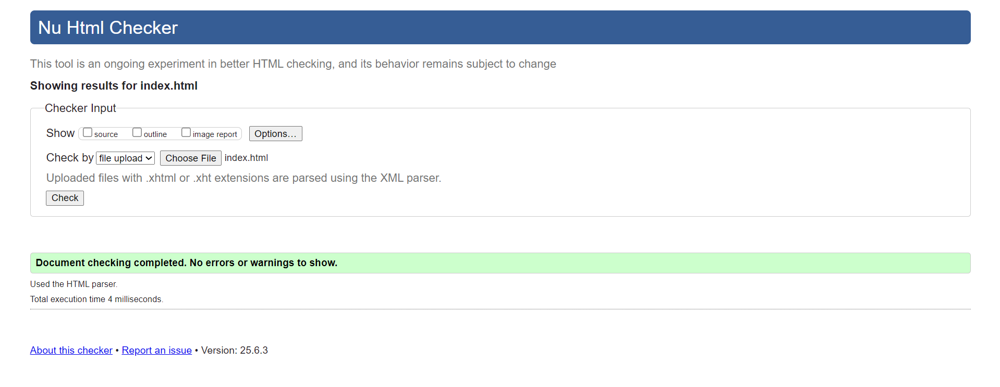
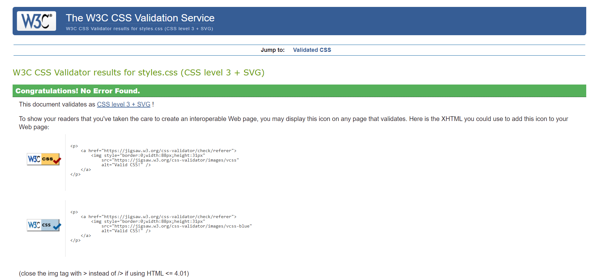

Site Development Report
My Web Development Journey
It is an incredibly revelatory experience to learn the basics of web development especially the HTML and CSS. My entry level understanding about how websites are organized was not very high but this module has made me gain a lot of knowledge. During the first step of the process, it was necessary to learn semantic HTML tags as orientation to the further development of accessible and properly structured pages. A few frustrations crops up, especially when debugging CSS layouts but the reward of an element fitting well proved to be worth it.
The aspects that I consider my ups include the ability to apply rules of responsive design, and in this case, the hamburger menu option in the mobile mode, and it felt like a major accomplishment. I also liked using different CSS grid arrangements especially in the `project.html` page as an indication of versatility. The downs consisted primarily of struggling with the browser compatibility peculiarities and the attempts of making the complicated layout act the same in different screensizes. Every test, nevertheless, resulted in the further knowledge of the concepts behind.
Reflective Discussion of Module Experience
The module has formed the basement of my computing life. It gave me practical exposure to the client-side web technologies, which have become core competencies in the contemporary environment. I also got to know the need to have clean code and documentation and circle development using Git and GitHub. The responsive design trend reminded people the necessity of considering user experience on different devices which is a crucial point to consider as a contemporary web developer.
It is very satisfying to feel that the construction of this portfolio site, which occurred through a process of pre-designing it, and then realizing it with code is a process by which I have learned so much. It also strengthened the idea of deconstructing big problems in smaller fragments that are easy to handle. I also liked the idea of self-review and the search of what I need to improve, which is important to be able to learn actually.
Technical and UI Design Decisions
As a technical basis, I decided to use a simple markup (HTML5), and as a CSS framework Tailwind CSS. The reason why Tailwind was chosen is the utility-first methodology that accelerated development by quite a margin and provided consistency. It enabled me to create a responsive design without a need to write enormous custom CSS.
UI-wise I wanted a clean, modern and professional look.
Font Choice: I chose Google fonts: font inter. It is simplistic, sans serif, which means it can be read easily across all screen sizes and presents a modern appearance, which is customary to a professional portfolio.
Color Palette: Classic blue is used as a primary color in accents and calls to action, dark gray as a primary color in header and footer, and grays that are considered lighter in the background and text. The colours of this palette are visually pleasant, offer decent contrast and look professional.
Layout: A general layout is rather simple and easy to follow. They have a navigation bar that is common in every page. In the case of the `project.html` page, I made sure to use a CSS Grid layout by including `grid-template-columns: repeat(auto-fit, minmax(280px, 1fr))` so as to display another skill of layout. This makes the projects presented in an orderly manner in a grid that varies to one to three columns depending on the screen size.
I have chosen to base my design on the aspects of modern portfolio websites that focus on clean design, legible typography and mobile-responsiveness. Although I did not take any specific site as an example, I was inspired by the minimalistic and functional design style that can be found on Behance or Dribbble platforms when it comes to general layout ideas.
Validation Reports
Screenshots of my HTML and CSS files passing validation process can be found below. This will make the code web standards compliant and thus there is improved browser compatibility and maintainability.
HTML Validation
Screenshot from W3C HTML Validator showing no errors.
CSS Validation
Screenshot from W3C CSS Validator showing no errors.
Video Demonstration URL
All the concepts, decision on the design, and pages used are presented in my video demonstration, found in the following URL: